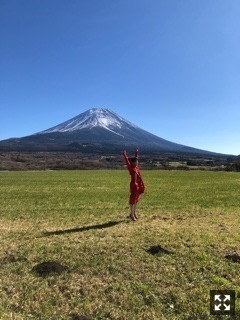
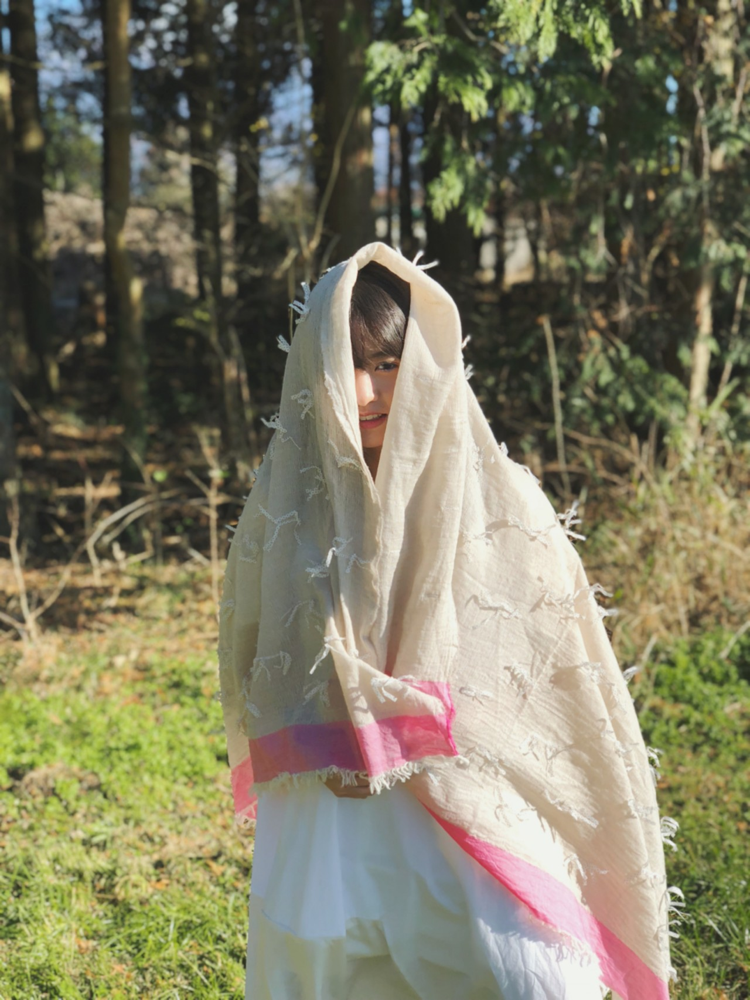
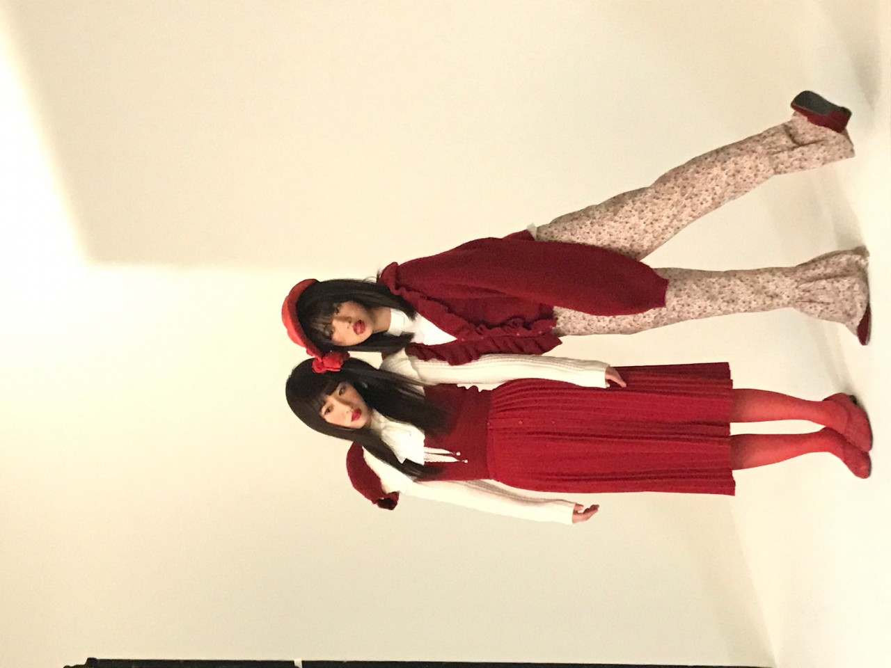

こんにちは！
2017年もあと少し。
今年も楽しかったなあ
私の中の一大行事は
あさひなぐと脳内博覧会でした。
上半期はずっと薙刀やってたな
下半期は家にあるものいっぱい外に出したな
展示してた服や物や家具たちが
最近戻ってきて、
あーーー娘たちーー！
ってなりました。
あと、展示のために購入した
人体模型も増えたから
どこに置こうか迷ったんだけど、
あのガラス棚とテレビの間に置きました。
だから必然的に
テレビ見ながらごはん食べる時
人体模型も目につくわけよ、
人呼べないよなあ
って思った、、
NOGIBINGOでゲットした
炊飯器使い始めました。やっと！
最近カレー作ったり、レタス鍋←！
も作ったりしてます。
レタス鍋、玲香が乃木中で紹介してたやつ！
タレがこれまた美味しいのよー
薬味たくさんいれるのおすすめだよ～～
ネギとニラとミョウガと生姜とシソ！



blt graph.
富士山！！！

EX大衆
表紙ー！


OVERTURE
ずーー！
たくさん載せてもらってます。
お世話になりました。
インタビューも読んでね！
まりか